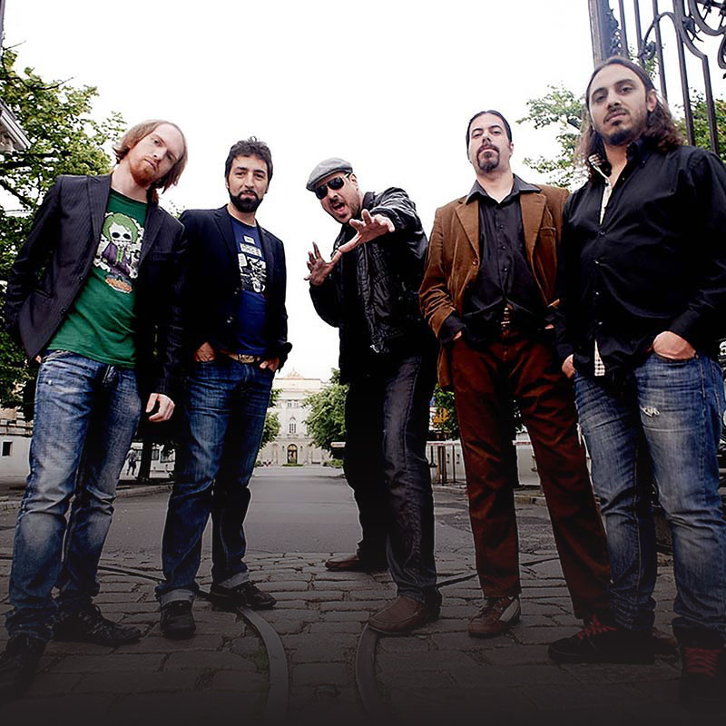

Tanghetto
ARGENTINA
Proyecto de electrotango explora en los orígenes del baile argentino.
Fue una moda en Argentina a comienzos del 2000. Eso de mezclar tango con electrónica. Una fórmula rentable que se consolidó como un fenómeno de exportación no tradicional, pero que sin embargo decantó en poquísimas agrupaciones que superaran la anécdota. Tanghetto es una de ellas. Liderado por Max Masri y Diego Velásquez y secundado por nueve músicos en escena, el proyecto debutó en 2003 con un disco llamado Emigrante, pero un año después publicaron el notable Hybrid Tango, donde hurgaban en los orígenes del género -particularmente en ritmos como la payada, la habanera y la milonga- para confirmar una tesis tan reivindicatoria como útil para su propia propuesta: el tango siempre fue “fusión”.